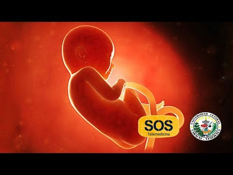

| El aborto espontaneo | Aborto inevitable | ||
|---|---|---|---|
| El aborto espontáneo es aquel que no se da de forma intencionada, sino a causa de una serie de complicaciones en el feto o en la madre. Generalmente ocurre durante las 12 primeras semanas de gestación y no precisa de ningún tipo de intervención quirúrgica, pero a partir de la semana 20 pasa a denominarse muerte fetal. La tasa de aborto espontáneo se encuentra entre el 15 y el 20% entre aquellas mujeres que saben que están embarazadas. Según datos recogidos en el último Congreso Anual de Hiteroscopia, 3 de cada 10 mujeres que se quedan embarazadas por primera vez sufren un aborto natural, algo que plantea muchas preguntas y dudas sobre las posibles causas. | Hay que tener en cuenta que más de la mitad de los óvulos fecundados no son viables y se expulsan de forma espontánea; para la mayoría de las mujeres esto pasa desapercibido ya que los únicos signos que se dan de este hecho es un sangrado ligeramente mayor del habitual durante la menstruación. Las causas de un aborto espontáneo pueden ser varias, aunque lo más común es que se deba a problemas en los cromosomas de los embriones. "Esto es que el embrión tiene algún problema en su dotación cromosímica o en su contenido genético que permite su implante en el útero pero no su desarrollo final", detalla el experto del IVI.También existen otros factores como niveles hormonales anómalos, diabetes no controlada, incompetencia del cuello uterino o algunos medicamentos. Otro tipo de causas pueden ser infecciones, obesidad, problemas físicos en los órganos reproductores de la madre, problemas con la respuesta inmunitaria o enfermedades graves. | Presencia de sangrado transvaginal, dolor pélvico tipo cólico y cambios cervicales (dilatación) | |
| Aborto incompleto | |||
| Presencia de sangrado transvaginal y/o dolor pelvico con dilatación cervical y se encuentran productos de la concepción en el canal cervical. | Embarazo no deseado y aborto inducido en Colombia: Causas y Consecuencias | El aborto inducido es difícil de analizar debido a su práctica clandestina y el estigma que lo rodea. Pese a la sentencia de la Corte Constitucional promulgada en 2006 que legaliza parcialmente el aborto, solo una muy pequeña proporción del total de abortos inducidos que ocurren en Colombia son legales; aquellos que no lo son pueden significar un grave riesgo para la salud y bienestar de las mujeres. Con base en el uso de una técnica indirecta, este informe presenta estimaciones de los niveles de aborto inducido en el país. Analiza la capacidad de las mujeres colombianas para planear sus embarazos y lo que sucede cuando no pueden hacerlo. Se examinan las tendencias de aborto durante las dos décadas anteriores junto con el factor que hace que las mujeres recurran al procedimiento—concretamente, el embarazo no deseado. El informe se centra en la práctica y condición actual del aborto, ya sea ajustado o no a los criterios legales. | HA HABIDO MUCHOS En 2010, una alta proporción—cerca del 80%—de las mujeres colombianas en unión practicaban la anticoncepción, incluyendo 73% que usaban métodos modernos; y 6% que usaban métodos tradicionales menos efectivos.
El mayor uso de anticonceptivos es un factor esencial que subyace a las tendencias de fecundidad del país: el tamaño promedio de la familia, que ha estado disminuyendo a un ritmo constante a lo largo de las últimas dos décadas, está ahora a nivel de reemplazo (2.1 hijos por mujer). Un gran avance legal ocurrió en 2006, cuando la Corte Constitucional revisó la prohibición total sobre el aborto inducido y decidió legalizar el procedimiento bajo tres criterios (cuando un médico certifica que la vida o la salud de la mujer está en riesgo; cuando el feto presenta una malformación incompatible con la vida extrauterina; y cuando el embarazo es resultado de violación o incesto, debidamente denunciado). La sentencia de la Corte se enmarcó en términos de los derechos de las mujeres a la salud y la vida. |

El aborto séptico se define como un proceso infeccioso ascendente caracterizado por una endometritis, anexitis y parametris por contaminación ovular durante las maniobras abortivas o por rotura espontánea de las membranas ovulares. Constituyen factores de riesgos el embarazo avanzado, ausencia de asepsia adecuada, dificultades técnicas en la evacuación uterina o presencia no sospechada de patógenos de transmisión sexual o de gérmenes de la flora normal potencialmente de la vagina, endocérvix, genitales externos y región perineal, que estan constituido por Enterobacterias, Pseudomonas, anaerobios como Bacteroides y Clostridium. Clínicamente pueden observarse signos locales o regionales de infección como pelviperitonitis, peritonitis difusa, tromboflebitis pelviana y/o signos de diseminación de los microorganismos o sus toxinas (sepsis, alteraciones hemodinámicas, hígado, pulmón y riñón de sepsis, trastornos de la coagulación, encefalopatía, hemorragia digestiva). La activación de los mediadores inflamatorios son los que provocan, dentro un gran espectro de consecuencias nefastas, hemólisis y el grave cuadro de shock, con la posibilidad de evolucionar al SIMO, cuadro que encierra una altísima mortalidad.
Un aborto séptico es una infección intrauterina grave durante o poco después de un aborto. En general, el aborto séptico se produce por abortos inducidos realizados por personas no entrenadas usando técnicas no estériles; es mucho más común cuando el aborto es ilegal.